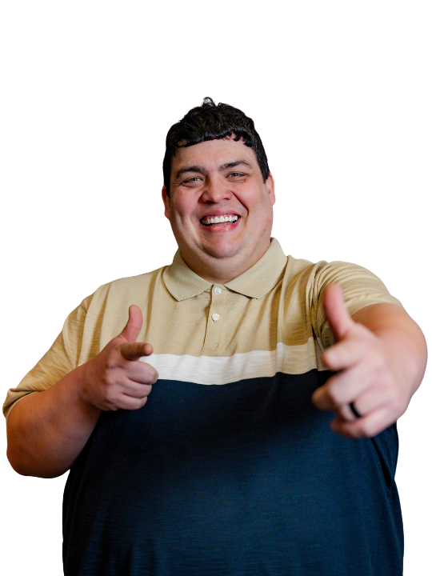
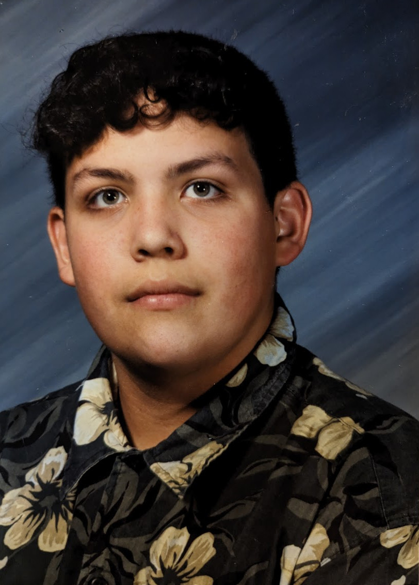
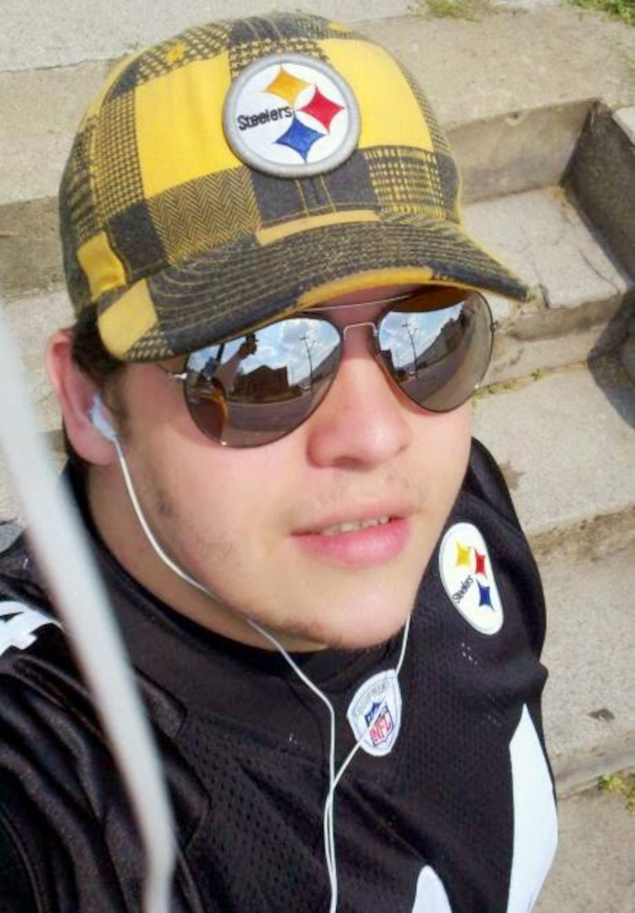
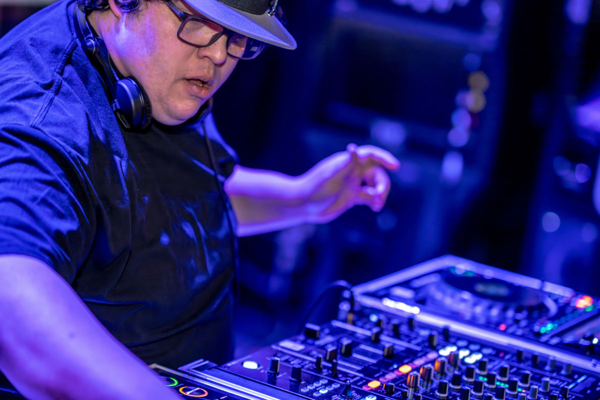

Welcome to my about page, below you can find pretty much my life story around music, performing, and throwing events and parties.
I like to be very open and accomodating to everyone. I practice the tenants of the rave scene where DJing is deeply rooted in peace, love, unity, respect, & responsibility. As such, we are an inclusive entertainment business open to everyone, including LGBTQ+ clients. My pronouns are he/him, I am a proud ally, and hate has no place here.
We are available for all types of wedding events and ceremonies and enjoy including all sorts of traditions. Whether they've been performed for thousands of years or will be done for the first time, every expression of love and commitment is beautiful and deserves a celebration!
We are here to make the right wedding for you, whoever you are and whoever you love. We want to give you a day that is unique, personal and without worry for you and your guests.

My name is Matthew Burns, aka Champs behind the decks and on stage.
I curate amazing experiences on the dancefloor and behind the mic, wherever I spin.
Thank you so much for considering us to host the entertainment for your event!

Sit back and let me take you on a journey. Some may skim this, and that’s okay! I believe context matters, especially when you are talking about entertainment for your event. My story is the foundation of the unforgettable experience I want to create for you. Here we go!
My passion for music began in a small city tucked away in Pennsylvania’s Allegheny Mountains. Specifically, in the passenger seat of my mom’s car to and from our sitter's house every work day. This was the cassette tape era, and she had a deep love for classic rock: David Bowie, Alice Cooper, The Cars, The Rolling Stones. Most of the time, instead of the radio, it was her cassettes that played everywhere we went.
As I got older, my taste expanded into hip-hop, rap, and electronic music started pulling me in. The energy of raves and underground parties fascinated me. Not just the music, but in the raw, unfiltered human connection that came with raving.
It was in hearing about those parties that the seeds of DJing were planted. Legends like Franky Bones, John Digweed, and Carl Cox inspired me in the early days, while deadmau5, Infected Mushroom, and Daft Punk kept the fire burning in the 2000s. The idea of becoming a DJ stuck with me and once it took hold, I couldn’t shake it.

In 2009, I left my small town in the middle of Pennsylvania and moved to Pittsburgh with no car, two restaurant jobs, and a determination to make it work. By 2011, I landed my first job in IT, and through that, I discovered raves, underground parties, and the thriving electronic music scene here in Pittsburgh.
Then in 2015, everything changed. I attended my first EDM show in Washington, D.C., to see the DJ duo Dada Life and it was nothing short of epic. It wasn’t just about the music; the entire experience was next-level. From the high-energy beats to the unexpected pillow fights (perfectly fitting their track Happy Violence), it was pure, controlled chaos.
That night lit a fire in me. It wasn’t enough to just enjoy the music, I wanted to create those moments myself. I started crafting mixes and playlists, channeling that same electrifying energy into my own sound.
But enough about me, what does this mean for you? It means you're getting a DJ with global experience, technical expertise, and a passion for making your event truly unforgettable.

Since 2019, I’ve been DJing in clubs and streaming live on Twitch, bringing a unique set of skills that go beyond just playing music. I create memorable, immersive experiences, both virtually and in real life.
Since 2022, I’ve helped manage EDC Discord Music Night LIVE, a monthly livestream showcasing DJ sets from the EDC Discord community. I help curate, broadcast, and host these sets on Twitch, ensuring each show reaches fans worldwide.
Starting in June 2024 and running for 12 legendary episodes, I was a monthly resident DJ on Ibiza Stardust Radio, the world’s largest dedicated house music radio station, based in Ibiza, Spain.
Since October 2024, I have been a regular at Pittsburgh Open Decks events at various venues across the city including Spirit, Bottlerocket, and Jackworth Ginger Beer, further honing my skills on club-standard equipment and continuing to play out live in front of audiences.
In 2023, I began offering private event and wedding entertainment services. I have booked over a dozen events & weddings in that time, growing in my journey as an entertainer, an MC, and in service to my clients.
In 2025 & 2026, I attended the Pittsburgh DJ Summit; a two-day DJ conference with presentations and workshops given by some of the best wedding and event DJs from all across the country. I networked with fellow DJs and event industry professionals to continue pushing my craft forward.
Your DJ’s experience, both in life and music, matters. The way your event feels, the energy on your dancefloor, and the way your music is presented can make all the difference.
Just like Dada Life gave me an unforgettable night on that D.C. dancefloor, I want YOU to have those same lasting memories. Whether it’s your wedding, a milestone event, or a party, once cocktail hour, dinner, and formalities are done, it’s time to turn up. Let’s get that dancefloor moving and create a night you’ll be talking about for a lifetime.
With years of livestreaming experience on Twitch & live events, I’ve mastered mixing across all genres, seamlessly blending everything from EDM, rock, and hip-hop to country, Latin, R&B, and even hair metal; hatever your vibe, I’ve got you covered. Let me take you on a journey through your favorite sounds in a way you’ve never heard before.
Beyond DJing, my background in livestreaming and technology has made me an expert in professional video and audio editing. If you’re putting on an epic event, you should have a way to relive it. That’s exactly why I started this company, to bridge the gap between the traditional DJ experience and today’s cutting-edge technology.
So let’s make your big day unforgettable and share it with the world!